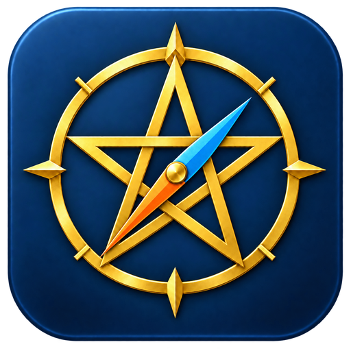

Materiali, app e percorsi per imparare ed esplorare.
Ideazione e contenuti: prof. Flavio Naretti.Realizzazione con il supporto di ChatGPT.
I materiali e gli strumenti esterni mantengono i rispettivi autori e condizioni d’uso.
La lucina verde conferma il controllo del catalogo pubblicato. Tocca la lucina per ricontrollare. Le modifiche ai file dentro Drive vengono segnalate solo quando il catalogo viene aggiornato.
Preferiti e risorse già viste sono conservati su questo dispositivo. Al primo accesso il catalogo è considerato già visto; gli inserimenti successivi e le modifiche riceveranno un badge.
Su iPad e iPhone: apri in Safari, scegli Condividi → Aggiungi alla schermata Home. Sul computer usa il comando di installazione del browser, se disponibile.
Il catalogo già caricato resta consultabile offline. Per aprire Drive e i siti collegati serve Internet.
Versione 1.0 • Catalogo iniziale